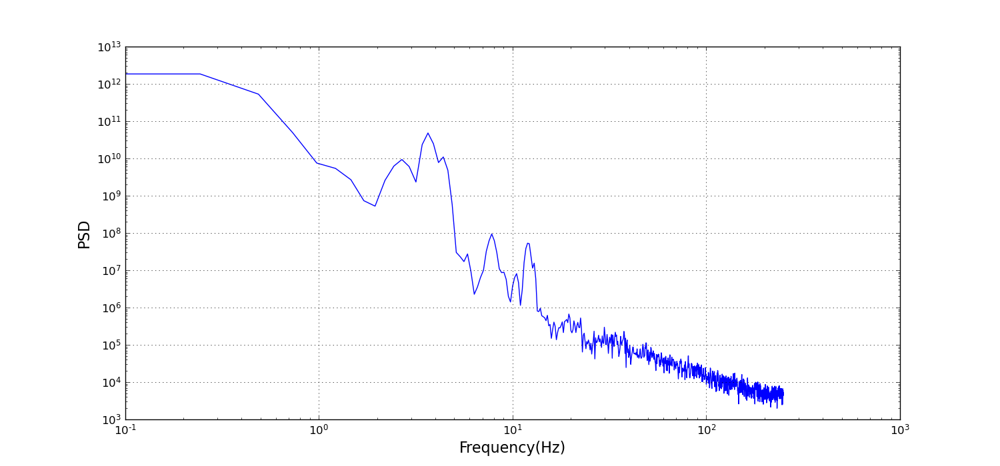
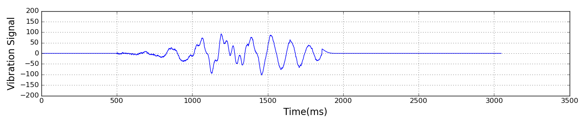
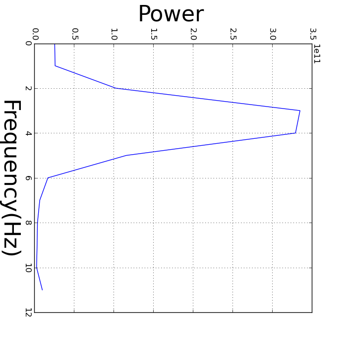
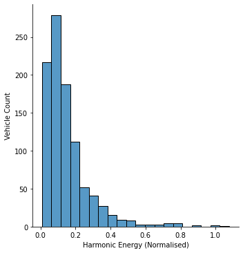
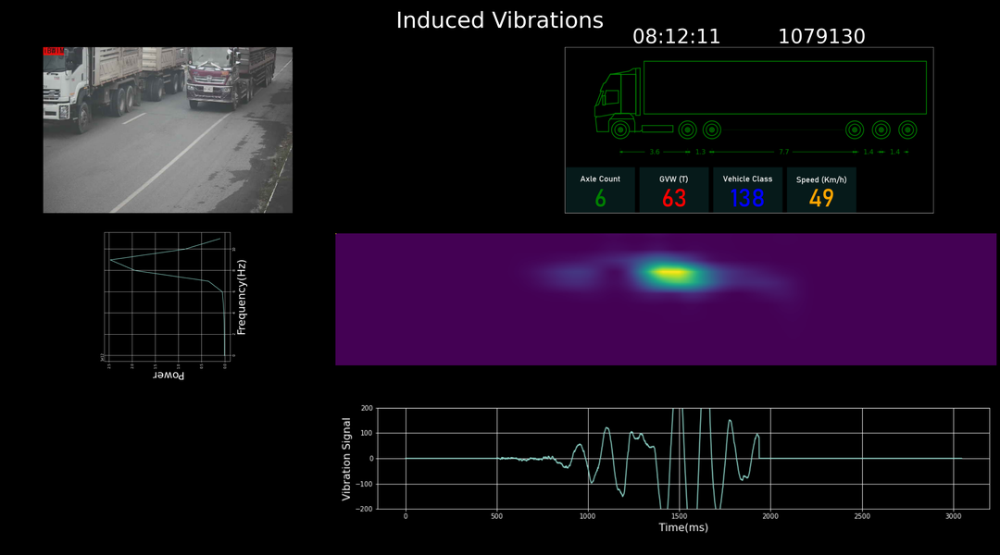

Bridge vibrations contain useful cues about the condition of a bridge—by measuring vibrations we can update our mathematical models of a bridge and detect incipient faults. As a heavy goods vehicle crosses a bridge, its axles apply a series of loads to the bridge that cause the bridge to deform. However, a bridge has mass and inertia and therefore exhibits dynamic behaviour. The speed with which it deforms and returns to its original geometry, the number and character of oscillations induced are determined by the structure of the bridge and the vehicle's suspension. By measuring the spectral characteristics of the bridge's response to this input we can infer many of the bridge's properties.
iBWIM measures the strain in a bridge as a heavy goods vehicle crosses; it uses these measurements to identify the speed, weight and axle distribution of the vehicle. However, it also measures the vibrations in the bridge induced by the vehicle and these can be analysed to retrieve the spectral properties of the vibration. By combining these two pieces of information we can resolve the natural frequencies of the bridge from those of the vehicle. We can form a more accurate view of the bridge and identify those vehicles that induce the most severe vibrations at critical frequencies. Furthermore, because iBWIM is designed for long term installation, many thousands of bridge crossings—and vibration events—to be recorded and analysed; and long term trends in the bridge's behaviour to be observed. The new Vibration Module for iBWIM gives the user the ability to use an iBWIM installation as a Structural Health Monitor that can resolve relevant events and the vehicles that caused them.
One of our iBWIM systems was installed on a 40m span of a two lane road bridge that supports around 500 heavy vehicle crossings per day. Each lane is instrumented with seven strain gauges: five in a row across the lane, and one on either side of the row. The strain sensors are mounted on the underside of the superstructure and measure the extension of the bridge structure under load. The strain sensors are therefore less affected by spurious deck vibrations than sensors mounted on the pavement surface.
Furthermore, because iBWIM uses an array of sensors, rather than a single sensor, we can estimate the power spectra more accurately. Any estimate of a random process's power spectrum is highly variable—and only makes sense when it is averaged over many instances. If we measure vibration with a single accelerometer, we will have to average the spectrum over many different vibration events. With an array of strain sensors on the other hand we 14 signals for each event. Because the vibrations affect the entire bridge, the vibration component of the measurement from each sensor is in phase. It follows that we can treat the output of each as an example of the same random process. That is, we can average the spectra of our sensor measurements for each event. This becomes important if we want to analyse and monitor the effects of individual vehicles.
Finally, because iBWIM is in place for weeks, months or even years, we have a data set of tens, or hundreds of thousands of events. These can be averaged as a whole to improve accuracy; grouped according to vehicle type (using iBWIM results) and then averaged to yield power spectra for particular vehicle classes; or analysed with time series to identify diurnal, seasonal and long term trends.
It is convenient to split the signal into static and dynamic componenets. The static response is the progressive deformation of the bride as the load moves across it. In general, there will be no overshoot, and the ths strain sensors will always be in extension. This is the dominant component. The dynamic response is the oscillatory behaviour of the bridge. This is the component we are interested in.
In spectral terms, the static component is concentrated around 0Hz and which quickly falls off with increasing frequency. The dynamic component is concentrated in a series of narrow bands, with the low frequeny bands usually being the most prominent. Normally, we would expect the peaks to a harmonic series, however for this bridge we observed the most significant bands was best modelled with two overlapping distribution This has been observed elesewhere and Cantero et al. argue convincingly that this is due to the iteraction of the vehicle suspension with the bridge. We detrend the signal by low pass filtering the signal with a Gaussian filter with standard deviation 64 milliseconds. The low pass signal is subtracted from the original signal, and subsequent analysis is carried out on the residue signal.

After a vehicle crosses the bridge, the resonances die away rapidly after only a few cycles. The challenge in analysing this type of signal is achieving an optimal frequency resolution. There is a fundamental limit to the resolution with which frequencies can be distinguished for such short duration signals. The more the signal is localised in time, the more spread it is in the frequency domain (this is analogous to the uncertainty principle).
We tackle this problem by assuming that the signal consists of bands that follow a Gaussian distribution. This is analogous to the computer vision technique super-resolution where sub-pixel accuracy is achieved by assuming that edges are perfect step functions mediated by the camera optics and sampling. We will assume that the residue spectrum consists of a small number of components that we model as Gaussian. We use numerical optimisation to fit a Gaussian mixture to the spectrum. By estimating the centre frequencies of the Gaussians, we can achieve a higher resolution than is theoretically possible with the raw data. One benefit of this is that we can concisely describe the spectrum with the parameters of the Gaussians.
 
As well as being an indicator of the structural health of a bridge, the induced harmonics can, of themselves, be detrimental. Since we know that the vibration spectra varies from vehicle to vehicle, it follows that some vehicles will be more destructive than others. If we plot a histogram of the strength of induced vibrations, <í>below, we can see that a small number of events induce very strong oscillations. In practice, many of these high energy events are due to two heavy goods vehicles occupying both lanes. If fatigue issues are significant, a significant reduction in damage may be achieved by restricting heavy goods traffic to the slow lane over the length of the bridge.
 